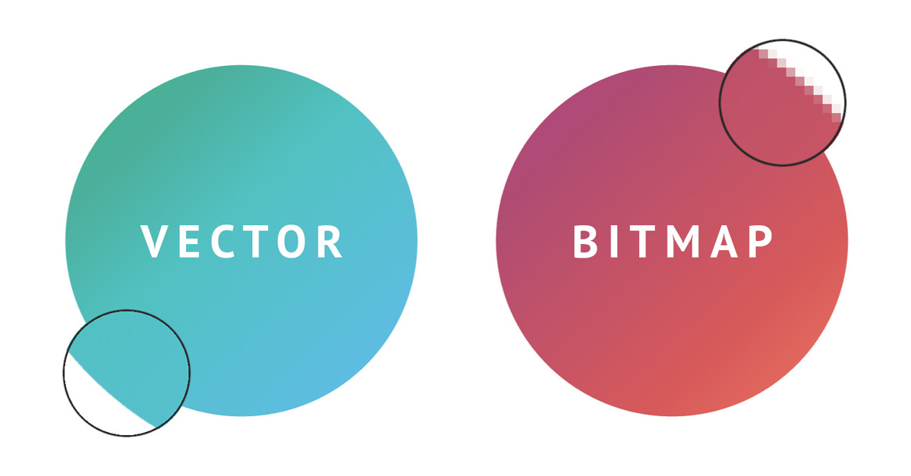

In questo sito andremo ad esplorare le differenze tra grafiche raster e i principali programmi di editing foto, come Adobe Photoshop, Illustrator e Gimp. In questo spazio scoprirete come ciascun programma si distingue per caratteristiche uniche e specifiche, e come scegliere il giusto strumento in base alle vostre abilità e alle vostre esigenze creative
|
Prima di procedere con la visione dei diversi programmi di editing foto andiamo a vedere quali sono le principali tecnologie adottate, cioè raster e vettori |
 |